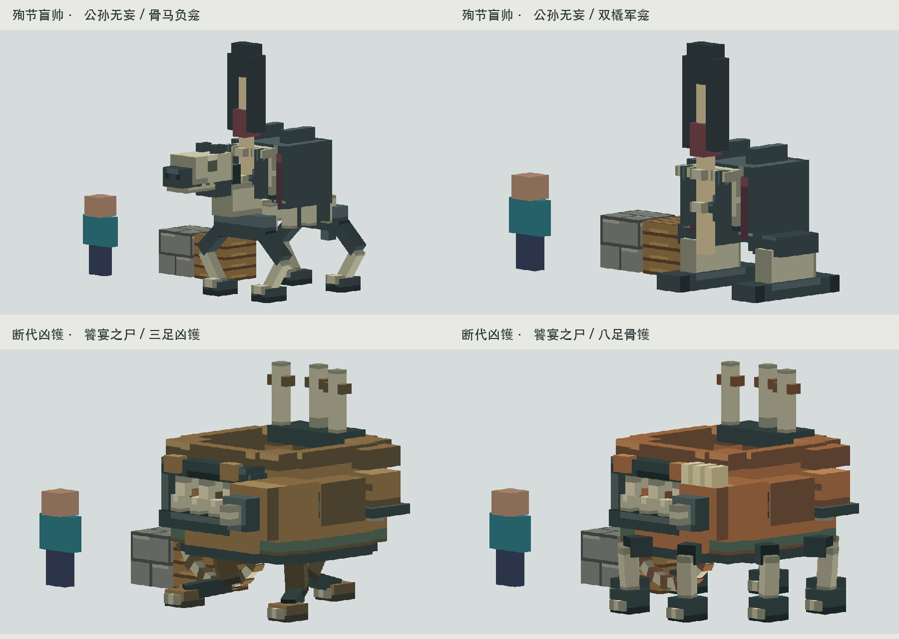

发现并补齐的交付缺口
源码四形态与10月28日交付摘要一致；现有整合包Jar的4个模型仍为旧版，4张新身体图集缺失。 现在已从5884个输入文件的独立快照完成正式构建，编译、资源处理、Jar封装与reobfJar全部通过。
新Jar中逐字节核对35项模型、动画、贴图及保护资源；9个Renderer相关类存在。 编译后字节码确认本体使用_body图集，弹射物与地面法术保留原贴图，陶魇原有32tick过渡条件仍在。
2026-10-30：保留已认可形体、贴图、动作和玩法，本轮没有新建或重做生物。
源码四形态与10月28日交付摘要一致；现有整合包Jar的4个模型仍为旧版，4张新身体图集缺失。 现在已从5884个输入文件的独立快照完成正式构建，编译、资源处理、Jar封装与reobfJar全部通过。
新Jar中逐字节核对35项模型、动画、贴图及保护资源；9个Renderer相关类存在。 编译后字节码确认本体使用_body图集，弹射物与地面法术保留原贴图，陶魇原有32tick过渡条件仍在。
本轮是构建和封装检查。test任务没有测试源；没有启动游戏，没有重复旧联机测试。 旧实例与已通过联机验收的Jar没有被替换。游戏加载、正常光照与战斗观感仍待验证。
独立构建Jar · 完整核验结果 · 构建日志 · 绑定字节码
Jar SHA-256：0d48524e23a9e6c779616454ad3a3b193bbeac2474551cebbfdf0f8f6dc1c33a
以下为已有离线预览，非游戏截图。
